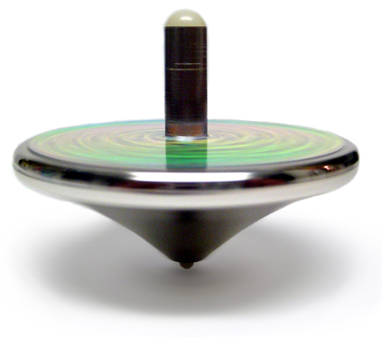
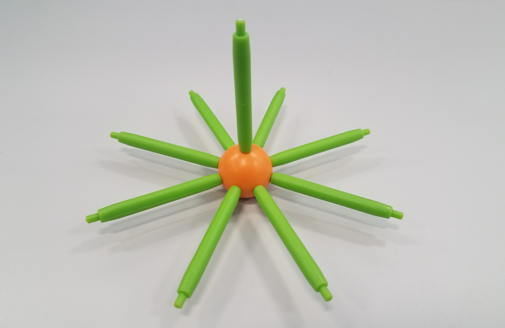
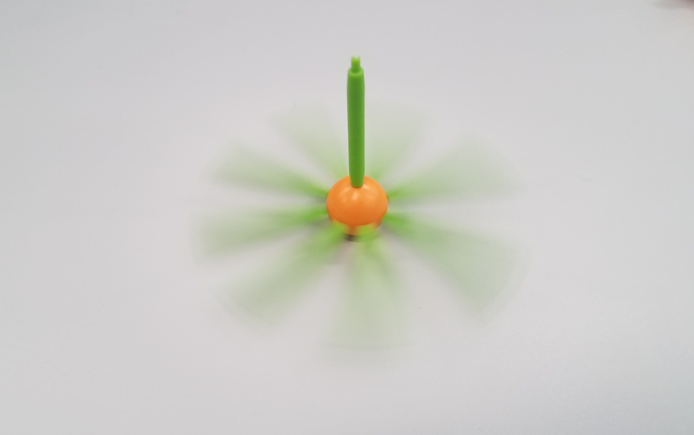

Do It! Geometric Shapes: Time Your Spinning Top
 The Challenge
The Challenge
Your challenge is to build a spinning top using Geometric Shapes Building Set pieces that will spin for the longest time possible. You will record your data, redesign your spinning top and retest, and then create a graph to share and analyze your data.

Project Steps
-
Build and Test a Top
-
Collect and Organize the Data
-
Display the Data
-
Analyze the Data
Build and Test a Top
- Use your Geometric Shapes Building Set kit to build a simple top that you think will spin well.
- Spin your top. Use a stopwatch to time how long it spins before it falls over.
- Spin it a few more times and record the times. Figure out its longest spin.
 
Collect and Organize the Data
- Redesign your top to make it spin longer (example: change its height, width, or weight).
- Spin your top three times.
- Each time use a stopwatch to time how long it spins before it falls over and write down the time.
- Circle the longest time that the top spins for each design before falling over.
- Take a picture of the spinner before you modify the design.
- Repeat these steps 4 more times. At the end, you will have built five different tops and tested each design three times to determine the top that spins the longest and shortest amount of time.
Display the Data
- Use the longest time that each top spins before it falls over to create a labeled bar graph.
- Create your labeled bar graph using The Spinner Time Bar Graph Template.
- Watch the screencast on page 2 of the template to learn how to use the template to create a bar graph.
Analyze the Data
Look at your bar graph. Write three statements about the spinners and amount of time that each top spun before falling over (For example, what was the longest spin? What was the shortest spin? How much longer was the longest spin than the shortest spin?).